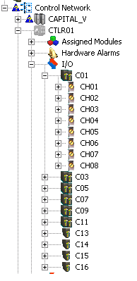
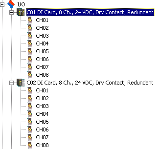
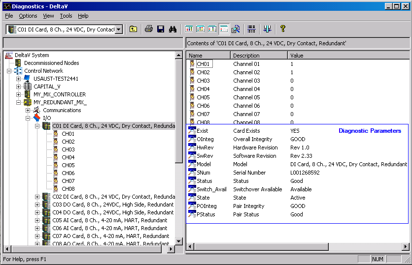

Identifying and troubleshooting Series 2 redundant cards
The redundant card icon, , makes it easy to identify redundant Series 2 cards in DeltaV Explorer, and the card's LEDs and DeltaV Diagnostics program provide troubleshooting and diagnostic information.
DeltaV Explorer
The redundant card icon, , appears on the odd slot number in DeltaV Explorer. The odd slot is the first slot on which the terminal block is installed. In this example from DeltaV Explorer, the redundant pair, C01, occupies slots 1 and 2.

The procedure for enabling and disabling ports or channels on redundant Series 2 cards is the same as that for pre-Series 2 cards: rght-click the channel or port, select Properties, and then select Enabled. To enable multiple channels or ports, right-click the I/O subsystem, and then select Configure I/O.
LEDs
The LEDs on the Series 2 cards show basic operating data. The correct operating conditions for the green Power/Active LED is solid for the active card and flashing for the standby card. The red LED (continuous on or flashing) indicates fault conditions. topic for complete information on each Series 2 card. Use DeltaV Diagnostics to diagnose problems.
Diagnostics
The left pane in DeltaV Diagnostics shows a redundant pair of cards slotwise. In the following image, a redundant DI, 8-Channel, 24 VDC Dry Contact card is installed in slots 1 and 2 (C01 and C02).

The active card is depicted with two darkened icons (C01), and the standby card is depicted with one darkened icon and one grey icon (C02).
Diagnostic Parameters
The right pane in DeltaV Diagnostics shows diagnostic parameters for the selected card in the redundant pair. The following image shows the diagnostic parameters for a redundant DI card.

The online help for the Diagnostics program provides descriptions of all the parameters. Following are descriptions of the SwitchAvail, Pstatus, POInteg, and State parameters:
SwitchAvail (Switchover Available) - Indicates if the redundant pair is available for switchover. Possible values include:
Unavailable - Missing Cards
Available
Disabled
Available - common faults (resolve problem and clear saved fault information)
Unavailable - missing standby
Unavailable - standby faulty
Unavailable - switchback disabled
Unavailable - both cards faulty (resolve problem and clear saved fault information)
PStatus (Pair Status) - Shows the status of the redundant pair. Possible values are:
No Card
Good
Integrity Error
Termination Block Incorrectly Installed
No Communication Between Cards
No Communication With Partner
Active Card Problem
Standby Card Problem
Standby Card Not Present
Both Cards Report Problem
Switchover Occurred, Possible Field Problem
Possible Loss of Field Power
Not Operational
POInteg (Pair Integrity) - Overall integrity (good or bad) of the redundant pair
State (Redundant cards) - Indicates whether or not the selected card is active. A state of Standby means not active; it does not mean that the card is necessarily available to take over as active.
To view parameter values for channels or ports, select the active card. The values are shown for the active card only; Diagnostics displays "Not Available on Standby" if the standby card is selected. If the channels or ports are disabled, Diagnostics shows "@@@@@" for the channel or port's Value parameter and "No installed configuration" for the Status parameter.
Clearing Saved Fault Information on Redundant Cards
Use the Clear Saved Fault Information command in DeltaV Diagnostics after any problems reported by the redundant card pair are identified and resolved. Redundant cards hold back previous error information to prevent switching back and forth. Users must acknowledge the problem and then clear the saved fault information. The Clear Saved Fault Information command re-enables switchovers if the same problems are detected again. One way to determine if you need to use this command is to look at the card's SwitchAvail parameter. If the value for the SwitchAvail parameter reads "Available – common fault" or "Unavailable - both cards faulty," send the Clear Saved Fault Information command.
For example, suppose a wire becomes loose on an Analog Input termination block. As soon as the active card detects the open loop, the controller records the fault, and the redundant pair switches over. Then, the new active card detects the open loop, and the controller records the fault again. In such a situation, detection of the same open loop will not cause a switchover. Once you find and secure the loose wire, use the Clear Saved Fault Information command to enable switchover if the condition is detected again.
If switchovers are not occurring as expected, be sure that the ENABLE_AUTO_SWBK parameter is enabled.
To access the Clear Saved Fault Information command:
Right-click the redundant I/O card that is reporting either of the above values in the SwitchAvail parameter.
Select Clear Saved Fault Information.